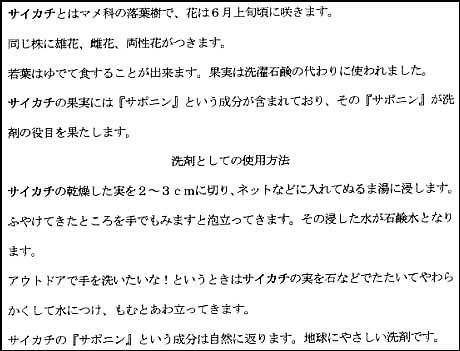
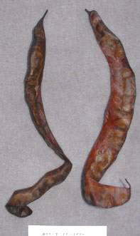
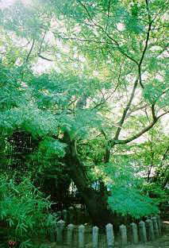
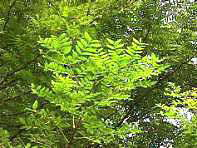
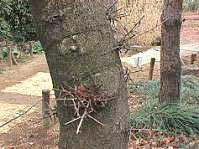

| 見たい項目をクリックして下さい | |||||||||
|
| 会員からの投稿（詳細-２４） |
| 「さいかちの木」について |
|
|
｢歳勝土遺跡｣｢さいかちの会｣｢さいかち坂」などの語源と思われるサイカチの木。 ｢古代渋谷の会｣の |
||||
|  |  | |||
| いただいたサイカチの実 （写真下は名刺、大きさを較べて下さい） |
||||
|
そこで、さらに少し調べてみました。 |
||||
| なお、歳勝土遺跡の歳勝土という字名は、「カブトムシやクワガタ などの虫が集まる土地」を意味すると聞いたことがある(出典を探した が見当たらず)。実は、カブトムシやクワガタは「サイカチムシ」とも 呼ばれるが、その訳はこれらの虫がサイカチの木に集まりサイカチ の樹液を好んで吸うことによるという。また｢サイカチコクゾウムシ｣ (カブトムシの仲間)という虫が､サイカチの木に付いているという。 どうやら大本はサイカチの木にあるらしい。 ｢歳勝土｣とは｢サイカチの木が繁り、そこにカブトムシやクワガタ などの虫が集まっている場所｣という意味に考えてよいようだ。 |
 | |||
|  |  | |||
| サイカチの葉 | 幹から伸びたトゲ | サイカチの木 | ||
| 投稿の一覧表 に戻る |